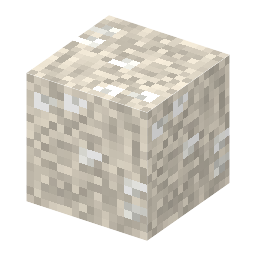

説明
①子ども 鍾乳洞の奥にある、白い結晶がまじったやわらかい土。
②学生 鍾乳石の洞窟だけにできる（鍾乳石ブロックの中）。シャベルで掘ると硝石土が2つ。シルクタッチでブロックのまま。
③大人 1812年の米英戦争のころ、アメリカのマンモスケーブでは洞窟の土を掘って硝石を取っていた。洞窟の中には、そのときの木の樋（とい）や桶が今も残っている。
④ガチ 洞窟の硝酸塩は、コウモリのふんなどの窒素が細菌に分解されてできる（硝化）。雨に流されない乾いた洞窟の土に、何百年もかけてたまる。
作り方
（作り方のレシピは無い：拾う・掘る・ほかの方法）
使い道
（このアイテムを使うレシピは無い）